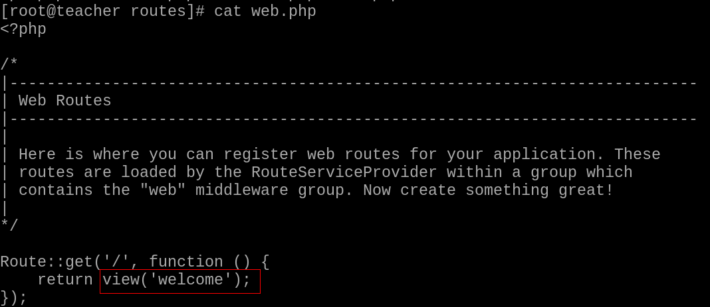
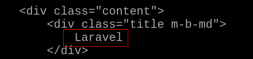

第九章 套件、框架、Composer
套件
-
PHP 套件庫
- 提供開發者相關套件，可加快開發速度！
- Packagist 網站
- 網站站址 : https://packagist.org/
- 利用 Composer 工具，可以取得該站台上的套件！
-
自製套件
- 可自行開發套件，再上傳至 packagist ，提供給所有人使用
- 過程請查看參考文獻
- 可自行開發套件，再上傳至 packagist ，提供給所有人使用
Composer
-
Composer 工具
- 功能與作用 :
- Composer 是 PHP 套件中，相依性的命令列管理工具
- 協助解析套件所需要的對應套件！
- Laravel 框架在管理各個 PHP 套件相依性的主要工具
- 安裝方式 :
- Windows 使用者，請查看參考文獻
- Windows 平台上沒有 PHP 套件，請記得下載安裝！
- PHP 下載站台，請查看參考文獻！
- Linux 使用者，可以查看第８章內容！
- 功能與作用 :
-
Composer 運作方式 :
- 相關運作的檔案
- composer.json : json 格式的檔案，是 Composer 的設定檔，主要提供開發人員察看維護。內容包含項目如下 :
- 專案說明
- 依頼套件及版本號
- 其它設置
- 自訂 script 及 event hook
- 此檔案會進版本控制
- composer.lock : json 格式的檔案，提供軟體程式使用的，會自動維護，不需要人為修改
- 記錄安裝時詳細的版本號，確保多人協作或線上環境都使用同一份套件及程式碼
- 此檔案會進版本控制
- vendor 目錄
- 用於存放下載依頼套件及 autoload 相關檔案
- 此資料夾可不用進版本控制
- composer.json : json 格式的檔案，是 Composer 的設定檔，主要提供開發人員察看維護。內容包含項目如下 :
- 相關指令的使用
- 查詢指令用法
# composer help [可接指令名稱] - 更新 Composer
# composer self-update - 查詢 Packagist 站台內的套件
# composer search laravel - 互動式建立 composer.json
# composer init [options] # cd 專案目錄 # composer init- name
- description
- type
- require
- require-dev
- authors
- minimum-stability
- license
- 安裝依賴套件
# composer require [options] [--] [<packages>]... [版本號] # composer require monolog/monolog- 版本號的用法:
- 直接指定版號，例如2.7.3
- 指定主版號之後，使用"*"指定次版號，例如2.7.*表示版號大於等於2.7.0，小於2.8.0的版本
- 使用>、>=、!=、<=、<等在版號前，表示使用這些比較運算子來指定版號規則，可以使用多個規則並用","分開
- 使用"~"在版號前，表示下一個版號變動之前的版本。例如~2.7，表示版本大於等於2.7，小於3.0
- 在版號之後，還可以加上不同的stability flag，例如2.7.*@beta。可以使用的flag有：dev、alpha、beta、RC、stable
- 版本號的用法:
- 安裝套件
# composer install [options] [--] [<packages>]... # composer install- 依據 composer.lock 安裝對應版本套件，通常用於第一次建立本地環境或線上環境。
- 若本地無 composer.lock 檔，會同時建立一份。
- 在正式環境中，不需要安裝 require-dev 的套件時，可加上 --no-dev 來加速安裝時間及減少空間使用
- 更新套件
# composer update [options] [--] [<packages>]... # composer update- 依據 composer.json 版本號條件，更新條件下最新版套件，會同時更新 composer.lock 檔案
- 重新產生 autoload 檔案
# composer dump-autoload [options] # composer dump-autoload- 重新產生 autoload 檔案，由於 Composer 會快取依頼的檔案，當修改路徑或載入，最好執行一遍重新建立快取檔。
- 查詢指令用法
- 相關運作的檔案
框架
-
框架思維
- 用來規範開發流程以及撰寫程式原則
- 提高開發速度
- 提昇程式執行效率
- 降低協同作業的難度
- 增加程式的安全性
- 有名的框架 : Zend、CakePHP、CodeIgniter、Laravel
- 用來規範開發流程以及撰寫程式原則
-
Laravel 框架特色
- 現代化 : 以 Symfony 框架為核心，結合外部套件所形成！利用 Composer 來管理套件的相依性！
- 路由 : Laravel 提供一個整合的路由介面，方便開發者使用！
- 模型化的資料庫建立及操作 : 利用物件關聯映射(Object Relation Mapping)概念，實作 ActiveRecord ，建立對資料庫系統的支援！
- 樣板引擎 : 使用 Blade 實現 MVC 功能
- 設定與部署 : 使用 .env 檔案與 config 目錄來提供開發者對於整個網站應用程式的設定，對於將來上線站台時，也可以使用自動化工具，自動部署站台
- 其他功能
-
安裝與設定 Laravel
- 建立專案
- 使用 Composer 來建立專案
- 在 PHP 練習的目錄(PHPexerise)下，建立一個 PHPproject 專案目錄
$ composer create-project --prefer-dist laravel/laravel PHPproject
- 在 PHP 練習的目錄(PHPexerise)下，建立一個 PHPproject 專案目錄
- 編寫 .gitignore
# nano .gitignore PHPproject/vendor - 推送至 github 站台上
$ git add . $ git commit -m "Add Laravel" $ git push -u origin master
- 使用 Composer 來建立專案
- 到正式環境站台設定
- 到網頁目錄內，取得練習的專案
# cd /usr/share/nginx/html # git pull origin master - 安裝需要的套件
# yum install php-xml rsyslog # systemctl start rsyslog # systemctl restart php-fpm - 使用 Composer，將套件裝齊(Composer 安裝法，請參考前面章節)
# cd PHPexerise/PHPproject # composer install - 注意一下目錄權限設定
# chown -R nginx ../PHPproject # semanage fcontext -a -t httpd_sys_rw_content_t "/usr/share/nginx/html/PHPexerise/PHPproject/storage(/.*)?" # semanage fcontext -a -t httpd_sys_rw_content_t "/usr/share/nginx/html/PHPexerise/PHPproject/resources(/.*)?" # restorecon -Rvv ../PHPproject - 設定 .env 檔案
# cd ../PHPproject # cp .env.example .env - 設定加密的 key
# # php artisan key:generate
- 到網頁目錄內，取得練習的專案
- 在用戶端或是你開發的平台上，打開瀏覽器，查看結果
- 建立專案
-
Laravel 目錄結構
- app : 專案核心目錄，程式邏輯全放置在這目錄下！
- app 依 PSR-4 規定，名稱空間為 App，依功能區分以下目錄
檔案 功能說明 Console 放置自有定義 Artisan 指令與相關的命令列檔案 Events 預設不存在！在執行 Artisan 指令 event:generate 或 event:make 時生成！專門放直事件相關的類別檔！ Exceptions 處理例外狀況的處理類別 Http 主要有 Controllers、Middleware、Requests 及 ViewComposers目錄，放置 Http 請求流程中所執行的內容 Jobs 預設不存在！在執行 Artisan 指令 make:job 時才會產生！放置工作排程用，可處理較長時間的任務！ Listeners 預設不存在！在執行 Artisan 指令 event:generate 或 make:listener 時才會產生！放置時件的偵聽類別！ Mail 預設不存在！在執行 Artisan 指令 make:mail 時才會產生！放置與郵件類別相關的檔案！ Notifications 預設不存在！在執行 Artisan 指令 make:notification 時才會產生！包含應用程式中所有的通知類別！ Policies 預設不存在！在執行 Artisan 指令 make:policy 時才會產生！放置與身份驗證相關的檔案類別！ Providers 由 config 裡的 app.php ，將服務提供者檔案放置於此 Rlues 預設不存在！在執行 Artisan 指令 make:rule 時才會產生！目錄內包含自定義表單規則，及其相關類別
- app 依 PSR-4 規定，名稱空間為 App，依功能區分以下目錄
- bootstrap : 框架的啟動目錄，內含 cache ，加快存取！
- config : 放置框架設定檔案
- database : 放置資料庫的資料表結構及基礎資料的目錄
- public : 專案的根目錄，放置靜態檔案！index.php 是整個應用程式的進入點
- resources : 含 views、lang、js、scss目錄！
- routes : 專案內的所有路由專案
- storage : 含 app、framework、logs 目錄！
- tests : 含 PHPUnit 的測試範例
- vendor : 由 Composer 建立，放置套件用！
- 其他重要檔案 :
- .env : Laravel 環境設定檔，可由範例檔 .env.example 複製
- artisan : artisan 主要程式進入點！只能在專案目錄內執行
- composer.jaon : 描述所使用的 php 套件資訊及版本
- composer.lock : 描述所下載的 php 套件資訊及版本
- app : 專案核心目錄，程式邏輯全放置在這目錄下！
-
Artisan 工具
- Artisan 是 Laravel 內建的命令列工具
- 使用該指令工具，可加速開發專案的速度
- 語法 :
php astisan 指令 選項 參數- 選項 :
- –help,-h : 查詢指令與說明
- –version,-v : 查詢框架的版本
- 選項 :
- 常用指令 :
- list : 列出所有可用的指令
- key:generate : 建立專案用 hash 加密金鑰！如果 .env 檔案中未設定，則需要使用該指令重新產生！
- tinker : 提供一個簡易的交互命令列，方便測試！
- route:[子命令] : 路由相關指令
- maker:[子命令] : 用於快速建立專案相關的檔案
- migrate:[子命令] : 用於快速建立資料表及資料內容
- db:seed : 在完成 migrate 指令後，該指令可將 seeds 目錄中的基礎資料裝入資料庫中
- vendor:publish : 將第三方元件的內容複製到所設定的目錄，方便設定及修改！
-
Laravel 運作流程
- 依伺服器運作環境設定，導入 public/index.php
- 載入 PHP 類別映射檔
- 啟動框架及服務提供者
- 讀取中介層檔案(如果沒有設定中介層，會直接跳過)
- 導入PHP路由(Route)
- 導入 MVC (Module View Controller)結構
- 回傳結果給客戶端
- 例 : route/web.php

- view(‘welcome’) =>表示是 resources/view/welcome.blade.php 檔案！
- welcome.blade.php :

- 修改一下紅色框的部份，再重新整理網頁！